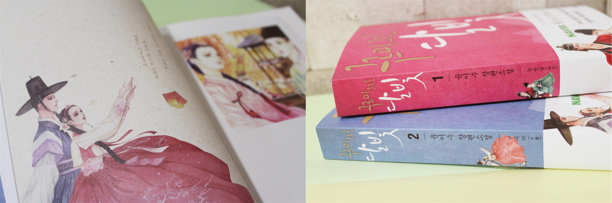

Based Off of a Popular Web Novel
First serialized on Naver in 2013, the series was then published as a five-part series of books in 2015. The web novel is written by Yoon Yi-Soo and illustrated by kk. [ref]
Fig.1 web novel series "Moonlight Drawn By Clouds". Click above to read the original web novel.
Love in the Moonlight: Pre-Air
Fig.2 Screenshot of first teaser. Click above to watch.

Fig.3 and Fig.4 Official Poster of Moonlight Drawn by Clouds
Love in the Moonlight: Plot
Disguising as a man, Hong Ra-On counsels men on dating as her daily job. Unfortunately (or rather fortunately), due to a love letter she wrote for a client, she meets the notorious Crown Prince Hyomyeong. [ref]
Fig.5 and Fig.6 Screenshots from episode 3
Fig.7 screenshot Fig.8 GIF from episode 4